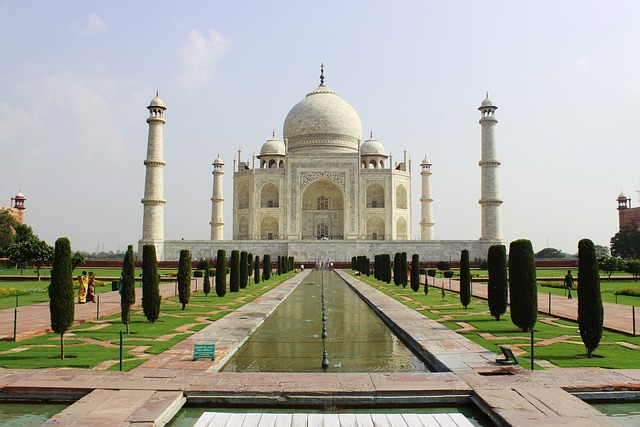
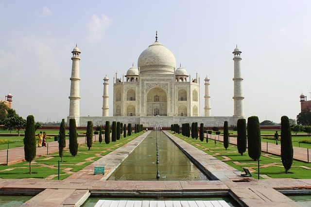

2. Taj Mahal
 

Taj Mahal merupakan monumen yang terletak di Agra, India. Monumen ini terkenal hingga ke penjuru dunia karena nilai sejarah, kisah di baliknya, dan keindahannya yang mengagumkan.
Taj Mahal menjadi rumah bagi makam Mumtaz Mahal, istri Kaisar Mughal Shah Jahan. Selain termasuk 7 Keajaiban Dunia, monumen ini juga dijadikan sebagai Situs Warisan Dunia.
Sumber: kumparan.com